玉林的属于亚热带季风气候，适宜旅游的时间是每年的夏季和秋季两个季节，玉林呢自古就有岭南美玉胜景如林的美誉，玉林呢是广西壮族自治区一个地级市，是全国著名的侨乡。玉林的美景，世界闻名，著名风景名胜区有云天文化城,大容山森林公园，等120多处。
容州古城Rongzhou Ancient City
容州古城位于广西玉林市容县城东，由原来的真武阁贵妃园景区扩建而成，于2017年9月9日重新开放迎客。容州古城由周边仿古建设街区、容州府广场、贵妃巷、容州府衙、刺史公堂、玄武剧场、经略台真武阁、容县博物馆、开元寺等组成。
门票：50元起
开放时间: 9:00-17:00
地址: 玉林市容县东外街
云天文化城Yuntian Cultural Town
云天文化城又名云天宫，这是一座金碧辉煌的仿古宫殿建筑，更是一座文化艺术展示馆。来到云天宫前一定会被这座恢弘大气的建筑吸引住，既有江南的亭台楼阁风情，又有布达拉宫的庄严，雕梁画栋，十分壮观。步入其中，众多艺术家的藏品一一呈现，一件件都是中华上下五千年来的民族文化瑰宝，让人仿佛进入了历史的长河。
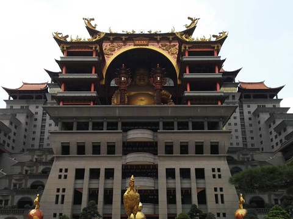 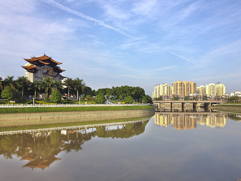门票：60元起
开放时间: 8:30-17:30
地址: 玉林市玉州区江滨路461号
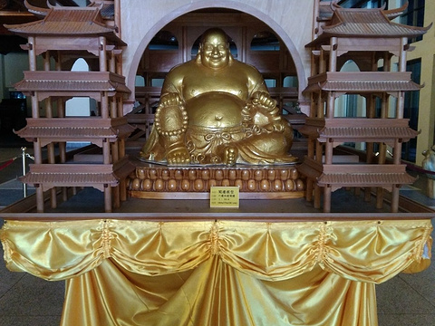容州民国小镇Rongzhou Republic Town
这是广西首个文商旅产业生态综合体验区，融合文化、旅游、娱乐、休闲、度假、购物为一体的新生活商圈。
小镇的街口，是以一个旧火车头为景观，一条长长的铁轨沿着街口一直延伸到小镇的那一头，乘着火车去旅行，变成小镇慢游的旅行方式。你能想像二三十年代前的铁路和火车是什么样的吗？这是根据1935年容县人廖百芳修建的广西第一条铁路，以及他辗转从德国购买回来的火车头的历史记忆建成的景观，将广西铁路的百年历史在这里重现。
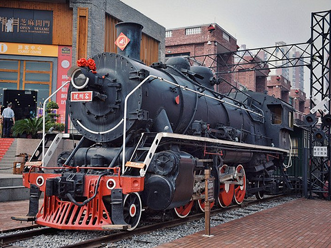小镇还有八个上将专列车厢，规划有特色主题餐饮、创意休闲餐厅、休闲酒吧、咖啡厅、水吧…
门票：平时免费，特殊节日收费
开放时间:全天
地址: 容县容州镇侨乡大道10号容州国际大酒店旁
小镇晚上的重点在于沿着铁路移动的百乐门舞台，随着舞台的缓缓移动，《绿岛小夜曲》、《茉莉花》、《夜上海》等风靡二三十年代的音乐，飘荡在小镇夜空，加上采用先进的舞台特效、灯光技术等创意手段，将现代时尚元素融入传统文化之中。
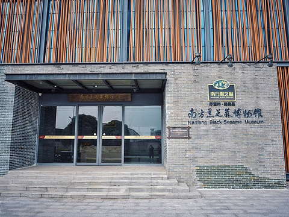八大上将公馆分别是：黄绍竑公馆、黄旭初公馆、夏威公馆、叶琪公馆、何柱国公馆、甘丽初公馆、罗奇公馆、韦云淞公馆。
这些中西合璧的建筑，将开发为“将军私房菜馆”，地方美食将在这里呈现，与繁华的街市相互辉映，摊铺林立，车水马龙，戏曲杂耍、副食小吃……一派繁华的市容风貌，如同一幅容县的《清明上河图》，在百年后的今天，它的从容大气、风情雅致又一一呈现在人们眼前。
大容山森林公园Darong Mountain Forest Park
大容山森林公园有着丰富的高山森林湖泊景观，这里有“桂东南的第一高峰”大容山，清秀的莲花瀑布，峡谷幽深的九瀑谷等。景观类型丰富，是欣赏山林美景和观日出、日落、云海的好去处。
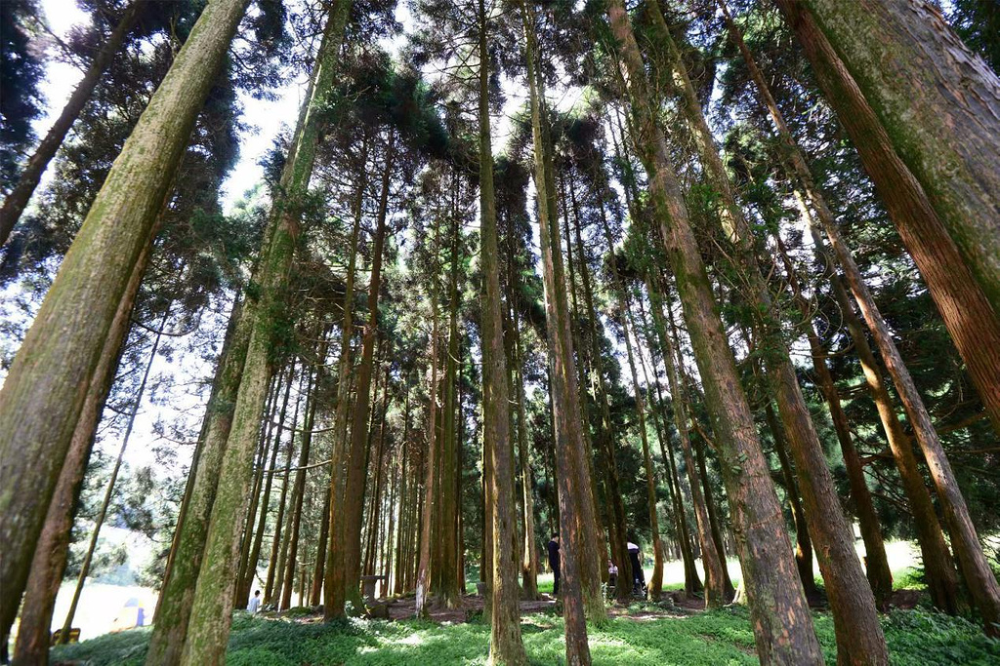 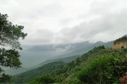门票：60元
开放时间: 8:00-17:00
地址: 玉林北流市大容山林场内
大容山森林公园的景点较为分散，龙门景区位于大容山山脚，这里有一幢韵味悠长的徽派古宅。九瀑谷峰回路转，有峡谷飞瀑之景。莲花景区则是整个大容山森林公园的精华所在了，有清秀的莲花瀑布，水面平如镜的小莲池，从这里可以走步道前往大容山，山峰海拔1275.6米，是桂南第一高峰，山顶常年云雾缭绕，而有序排列的大风车也成为了这里靓丽的风景线。公元917年，南汉高祖刘龚在今天的广州称帝时，就曾把大容山封为“南方西岳”，这个名号也一直流传至今。大容山全程步行游览来回需要约5、6小时，建议准备前往的游客早点出发。
杨贵妃故里Hometown of Yang Guifei
杨贵妃故里位于广西容县县城五公里左右的杨外村，杨贵妃的故里杨外村隐藏在重重丘陵深处，一条小河自湾肚田蜿蜓南流，至十里圩汇入绣江。沿河散布着片片稻田，四周层峦苍翠，农舍村落掩映在荔枝林和沙田柚林丛中，附近还生长着一丛丛凌云斑竹和国家重点保护树种格木。这一带山清水秀，风光如画。目前村里有杨贵妃庙遗扯、贵妃井，县城东还有杨贵妃梳妆台遗址。
门票：10元
开放时间: 全天开放
地址: 玉林市容县十里乡杨外村
谢鲁山庄风景名胜区Xielu Mountain Villa Scenic Area
谢鲁山庄建于1920年，距今已有上百年历史。它依山而建，环境清幽，奇花异草、亭台楼阁以及砖墙瓦顶的特色老建筑，使得这里既有苏州园林的小桥流水，又形成了别样的岭南韵味。
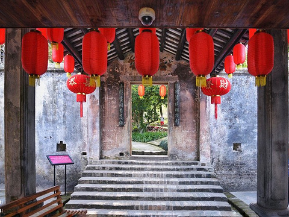 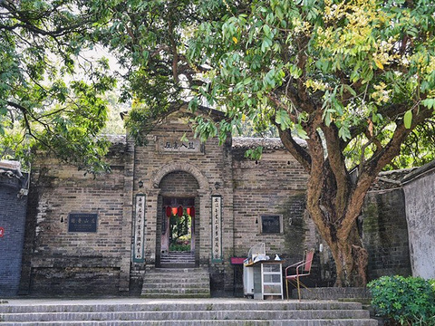 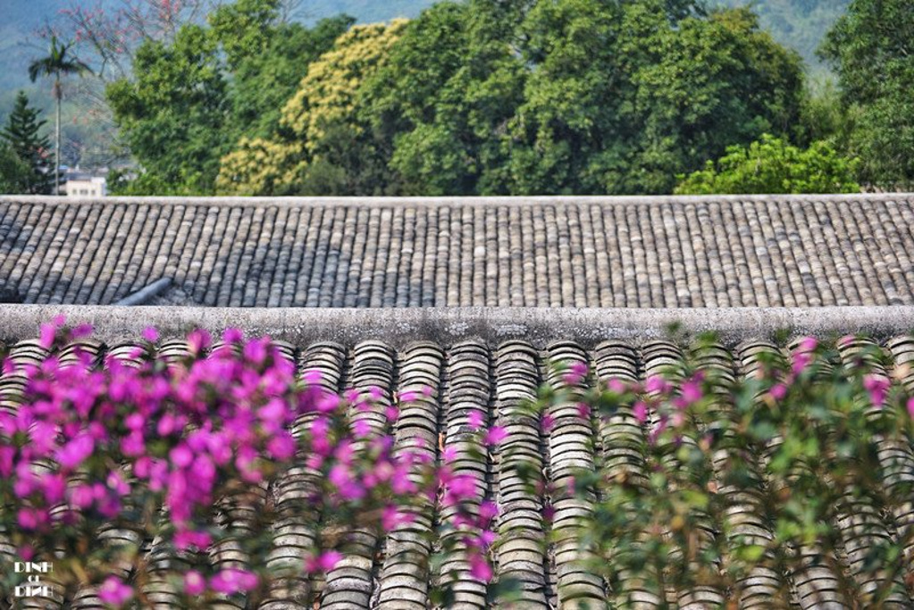
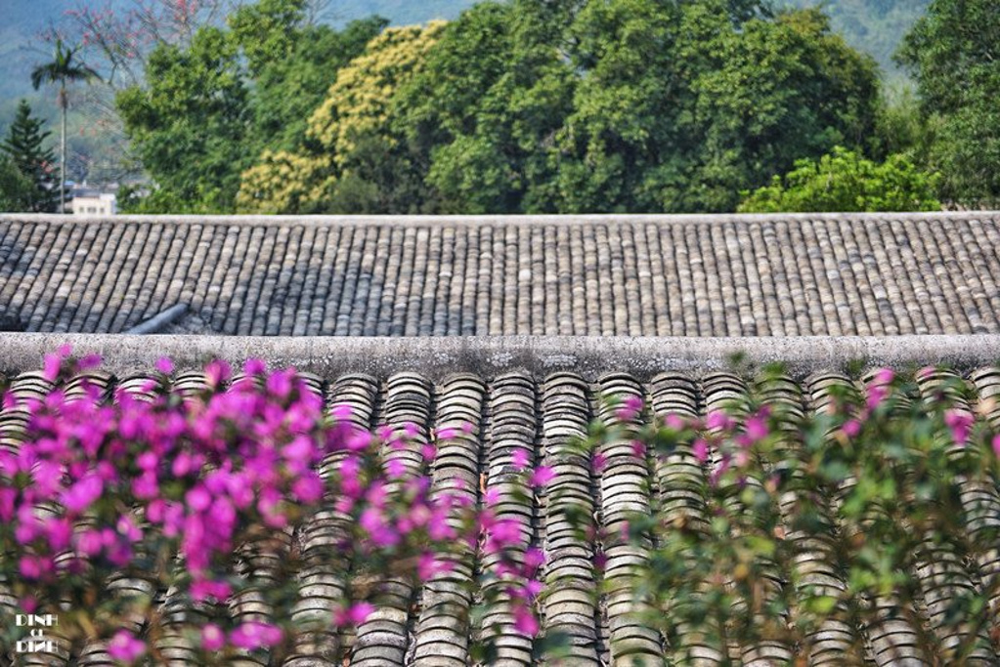
真武阁Zhenwu Tower
真武阁位于容州古城景区内，与黄鹤楼、岳阳楼、滕王阁并称为“江南四大名楼”。真武阁建于明万历元年（1573年），它底下的经略台则是建于唐乾元二年（759年），均历史悠久。让人惊叹的榫卯结构斗拱、古朴素雅的装饰、历经多次地震与狂风依旧安然无恙的楼体，使得它浑身都散发着我国古代建筑的智慧与辉煌。
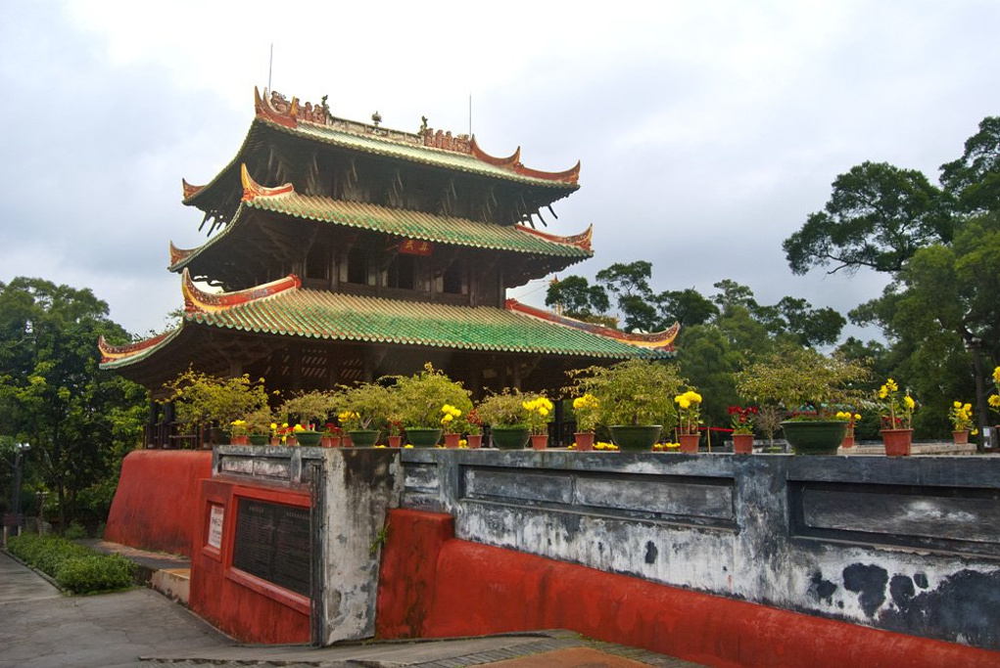 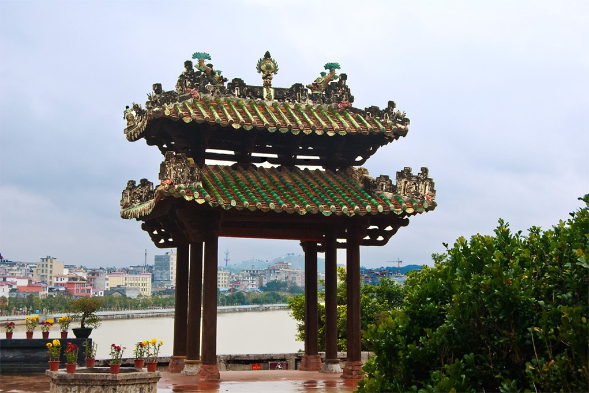真武阁最让人惊叹的地方便是阁楼二层悬空的金柱了，它和屋檐就像天平的两端，通过檐柱相接，达到平衡，从而使阁楼屹立不倒，充分体现了古人对于“杠杆原理”的应用，不禁让人叫绝。
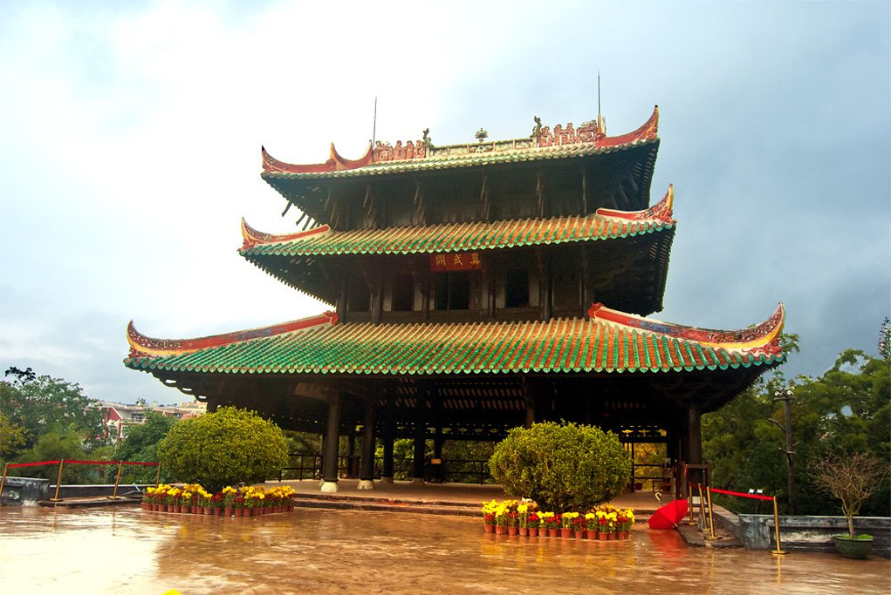 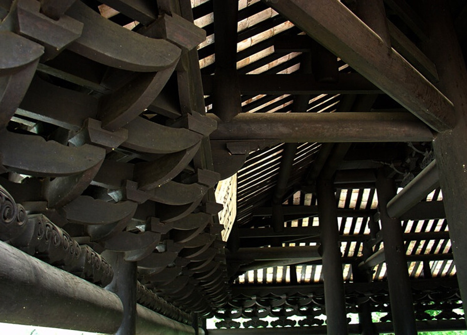